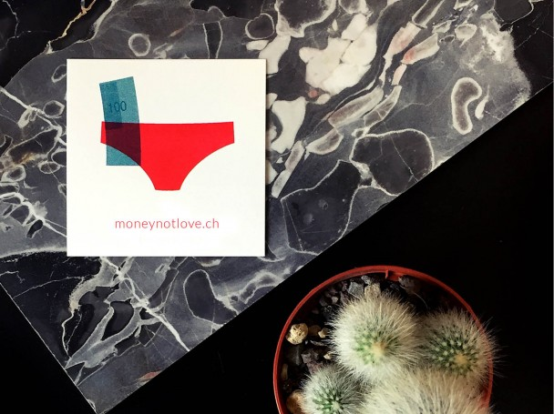
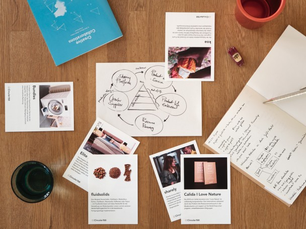
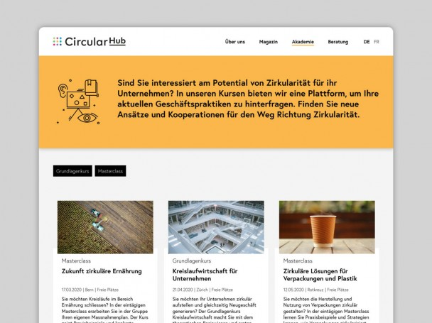
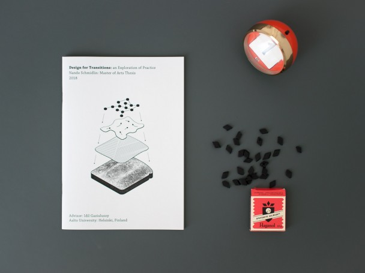
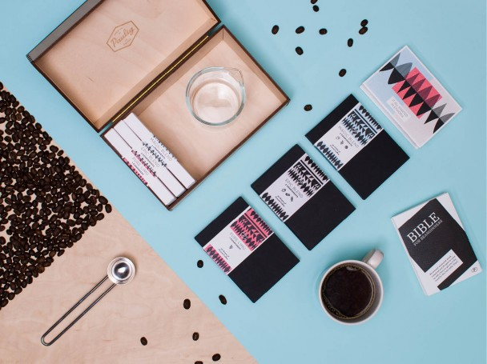
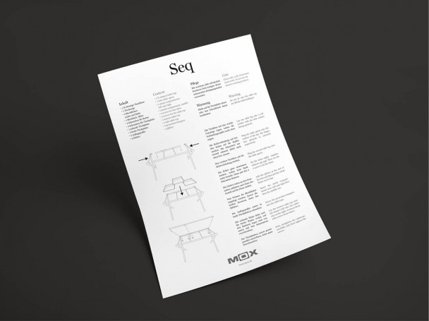
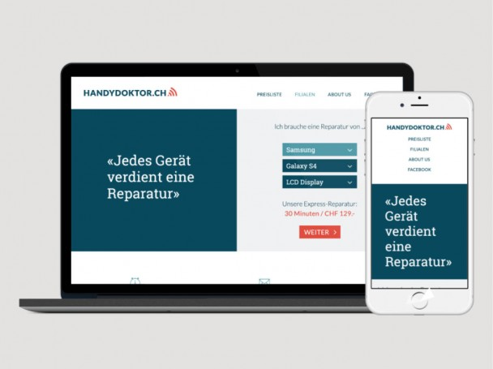

Ongoing
Kleine Quader
Words would not be enough to describe what comes together when 16 people make small booklets. Luckily, there is a video capture of each result of the past editions (going strong since 2013!)

moneynotlove
Designers are an disproportionate share of the gig economy, often working independently, lacking social benefits and legal support. moneynotlove is a network of creatives who openly share their knowledge to strengthen the creative industries as a whole. We offer support through an online knowledge base and organise offline round tables.

Strategies
Circular Business Modeling
For the workshops run by Circular Hub, I developed a series of methods aimed at sustainable business model innovation. The activities let people explore opportunity spaces in a circular economy by analysing case studies. Secondly the participants create their individual action plan, supported by our value creation and retention framework.

Digital Platform Circular Hub
I managed the development of the digital platform that would present the two main offerings of Circular Hub – the online magazine and the course academy. We implemented a flexible and adaptable structure suitable for the changing needs of the startup. We touched up the brand with minimal changes to make the existing appearance more mature.

Thesis: Design for Transitions
My thesis covers the background on system innovation and its relation to sustainability oriented design approaches, then introduces nine interviews with expert designers as additional material. Finally, I was able to unearth four steps helpful for anyone looking to adopt Design for Transitions in their work. Head over to the complete thesis in my University's online library.

Beaningfuls for Paulig
'Gustav Paulig Oy' hired us to develop a younger and more digital experience of their coffees. In perspective: this company is the largest coffee roaster in Finland, and Finns drink the most coffee per capita worldwide! However, the current brand did not resonate with the changing coffee scene, but we soon discovered that this was rooted in structural and organisational levels. Making full use of selected design methods (including a field trip to the US - nice), we put all our love and sweat into a future roadmap for Paulig. The results are covered by a NDA, and it will to be seen how much becomes a reality in a such a big organisation.

Brand Strategy for MOX AG
My long time collaboration with the Zurich based furniture company MOX included diverse projects. To balance online and offline sales channels, quality manufacturing and product design is tough. They managed this challenge quite well and built a loyal customer base. Together, we have sharpened their vision of the future and translated this into a brand strategy. The strategy includes very concrete recommendations for building a coherent brand, a challenge for such a small company with no big marketing department.

Online Strategy
Philip had been running Handydoktor GmbH for several years and it had grown into a mature business offering mobile phone related repair services in currently 7 cities across Switzerland. He approached me with the wish to update their current identity. For a long time, their brand has been untouched. It looked outdated and was not responsive. At the very beginning it became clear that the brand values had to be better defined and that little tweaks would not be enough to differentiate the service from the strong and upcoming competitors. The first step was therefore to create a clear vision whereof the redesign of their website is only the first step. The created brand book is the outcome of that. The new brand, even though it links to the old identity in many ways, is much more modern and up to date.

Products
Laboratory Ware Store
In collaboration with Myriam Marti, we have explored the unexpected qualities of industrial mass products. With a focus on laboratory ware, we exploited their high performance for the everyday use. Their form is driven by the needs of a professional clientele, revealing a minimal and fragile aesthetic. Even though designed for specific use cases, they are incredibly multi-purpose. They silently question the colorful and styled commercial kitchen ware.


Herr Ulrich
After World War II many Swiss designers wanted to help rebuilding Europe. To send their furniture as "Care Packages" to the surrounding countries, they designed folding and collapsing structures. 'Herr Ulrich & ich' is an armoire that sees itself in the tradition of these minimal but elaborated pieces.
The construction with a load-bearing wrap, which is put in shape through the shelves is not only visually appealing. In just a few minutes 'Herr Ulrich & ich' is established. At the same time, the compartments remain highly flexible and adapt to any use. With a weight of mere 18.5 kg the armoire is easy to carry around.


Storch
The german term 'Büro machen' summarises all the office work we do for our private lives, like paying bills, sending letters, answering emails. I spent a long time searching for the smallest, but large enough area, to do such work. It turns out to be 42 by 77 cm. The sheet metal top of Storch has multiple purposes to accommodate the daily mess of paper, pens, laptops and cables, without being openly multi-functional. It sports a fragile elegance, is mobile and light.
Storch was exhibited in Zurich and Cologne and is now part of the permanent collection of the 'Zurich Design Museum'.


Contact
Nando Schmidlin
Sihlquai 125
8005 Zürich
mail@nandoschmidlin.ch
nandoschmidlin.ch
Built with Studio Grotesk (Font), Sally (Flexbox) and Siema (Carousel).